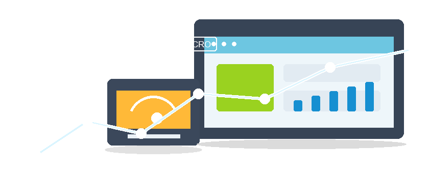
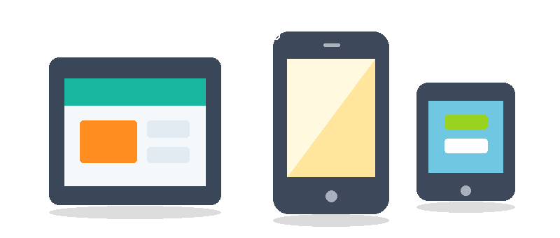
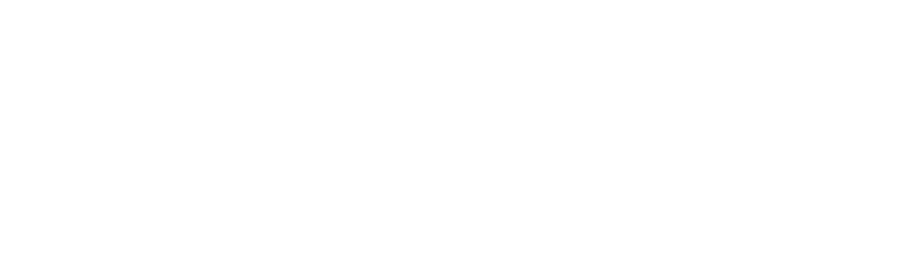

Strategy + design + code + launch
Websites built to turn interest into qualified inquiries
Amanpero Agency connects strategy, page structure, development, and launch support so your website can serve real business conversations.

Strategy + design + code + launch
Amanpero Agency connects strategy, page structure, development, and launch support so your website can serve real business conversations.


Traffic pages with tracking built in
Give search and social campaigns focused destinations with responsive layouts, clear offers, conversion tracking, and practical follow-up paths.

Connect content, creative direction, landing pages, and analytics so attention from social channels has a clearer route to conversion.
Clarify what your company offers, who it serves, and how the website should support stronger digital communication.
Turn services, offers, and campaign ideas into focused page structures with clear CTAs, forms, and tracking.
Prepare forms, conversion events, reporting basics, and post-launch improvements so the site keeps producing useful signals.
Amanpero Agency combines marketing strategy, page planning, website development, and launch support so your digital channels work as one practical system.
Strategy, design, development, launch, and ongoing improvement handled as one connected workflow.
Create local, regional, or niche service pages that explain your offer clearly to new audiences.
Turn service value, objections, and proof points into content that supports paid and organic traffic.
Plan page hierarchy, metadata, internal links, and content sections before development begins.
Build responsive, semantic pages that are easy to maintain and ready for future redesign work.
Keep content, forms, fixes, and small improvements moving after the first launch.
Connect forms and inquiries with practical follow-up paths for prospects and project leads.
Why Amanpero Agency
Amanpero Agency gives each project one connected path: define the business case, shape the experience, build the system, launch carefully, and keep improving after real users arrive.
You do not have to translate between separate strategy, design, development, and support teams. The work is organized as one project system.
Pages, forms, content, and technical features are judged by what they help a visitor understand or do.
After release, Amanpero can support fixes, content changes, analytics review, campaign pages, and improvement cycles.
Client feedback
Representative testimonials based on the type of collaboration Amanpero Agency is built for: clear scope, practical delivery, and support after launch.
Amanpero helped us turn a vague website brief into a launch plan we could actually follow. The most useful part was how strategy, copy, forms, and development were handled together instead of as separate tasks.
The team was direct about priorities and trade-offs. We launched campaign pages faster because the page structure, tracking, and form handling were planned before design details took over.
After launch, Amanpero stayed useful. Updates were handled clearly, issues were explained in plain language, and we had a practical backlog for improving the site month by month.
FAQ
These answers explain how Amanpero Agency approaches project planning, delivery, communication, and support before a formal proposal is prepared.
Ask a Project QuestionYes. A project can include strategy, sitemap planning, UX content, visual direction, frontend and backend development, forms, analytics, launch checks, and post-launch support.
No. A short description of your business, goals, current website or assets, timeline, and service interest is enough to start a useful conversation.
Yes. Amanpero Agency can support focused work such as landing page creation, frontend development, analytics setup, campaign page planning, or website maintenance.
Estimates depend on page count, content readiness, design complexity, technical features, integrations, review cycles, and launch requirements. The proposal defines scope before work begins.
Post-launch support can include fixes, content updates, performance checks, form monitoring, analytics review, campaign page adjustments, and a prioritized improvement backlog.
Start the conversation